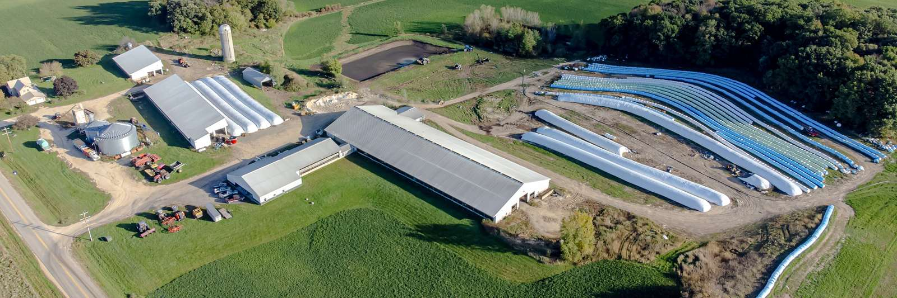

Packaging and shipping your samples
Follow these steps to get your blood or ear notch samples to our lab safely. Samples that reach the lab by Wednesday are reported Thursday.
How to pack your shipment
- Label all blood tubes and ear notch vials clearly with the animal ID, making certain caps fit securely.
- Wrap the tubes and vials in absorbent material, then place them in air-tight, heavy-duty zip-lock bag(s).
- Place the bag of samples into the shipping box and surround it with ample packing material to prevent breakage during shipping. Use a sturdy cardboard box, never a plain or padded envelope.
- Place the completed submission form and payment in their own zip-lock bag inside the box. Not sure which form? See Which form do I need? below. First box? Please call our office before your first submission.
- Ear notches and BVD blood samples only (cattle and bison): refrigerate them until you pack, then add frozen ice packs. Pregnancy blood tubes do not need ice. If a cold shipment cannot reach the lab within 48 hours, call first for instructions.
- Use proper shipping labels (we can provide them). Write "BOVINE BLOOD and/or TISSUE SAMPLES" and "Exempt Animal Specimen" on the outside of the box. For goats or sheep, write "CAPRINE BLOOD SAMPLES" or "OVINE BLOOD SAMPLES" in place of the first line.
- Ship samples via FedEx, UPS or USPS Priority Mail so they reach our laboratory no later than Wednesday. Ear notches and BVD blood must also arrive within 48 hours of collection, whichever comes first.
- Tubes labeled with the animal ID, caps on tight.
- Tubes wrapped in absorbent material and sealed in a heavy-duty zip-lock bag.
- Packing material all around the bag.
- The submission form and payment in their own zip-lock bag.
- Ice packs for ear notches and BVD blood only.
- "BOVINE BLOOD and/or TISSUE SAMPLES" and "Exempt Animal Specimen" written on the outside. For goats or sheep, write "CAPRINE BLOOD SAMPLES" or "OVINE BLOOD SAMPLES" instead of the first line.
Ship-by planner
Pick the day the box goes out and how it travels. The planner shows the day it reaches the lab and the Thursday report it makes.
Overnight means UPS or FedEx overnight.
Ear notches and BVD blood ship cold. Pregnancy tubes do not need ice.
Samples that reach the lab by Wednesday are reported Thursday. With Priority Mail, ship by Monday. With UPS or FedEx overnight, ship by Tuesday.
Ear notches and BVD blood ship cold and must reach the lab within 48 hours of collection.
Ship to
Advanced Dairy Diagnostics & Consulting, LLC
362 310th Avenue
Frederic, WI 54837
The lab is staffed Monday to Friday, 8 a.m. to 4 p.m. Central. Tests run Monday through Thursday.
Our lab is closed to the public. For the biosecurity of every herd we test, we do not allow visitors into the laboratory. Samples come to us by mail.
Which form do I need?
Disease monitoring covers Johne's, Leukosis, Mycoplasma and other tests.
Three forms cover pregnancy and BVD PI testing, and all three are below. For Johne's, Leukosis or Mycoplasma, call the lab first.
Test forms
Download and complete the form that matches your samples, then include it in your shipment.
Cattle and bison pregnancy
Cattle-Bison Pregnancy Test Submission Form
Download PDF, Cattle-Bison Pregnancy Test Submission FormBVD PI, cattle and bison
BVD PI Test Submission Form. Ear notch or blood.
Download PDF, BVD PI Test Submission FormGoats and sheep pregnancy
Small Ruminant Pregnancy Test Submission Form
Download PDF, Small Ruminant Pregnancy Test Submission FormFirst box? Please call our office before your first submission, at (715) 653-2201, or send the new client form. A call settles which supplies you need.
Supplies we can ship you
If you do not keep sampling supplies on hand, order them on the submission form and we ship them with your first order. Prices are printed on each form. Tick what you already have and print the rest.
Tick what you already have; whatever is left is your order list.